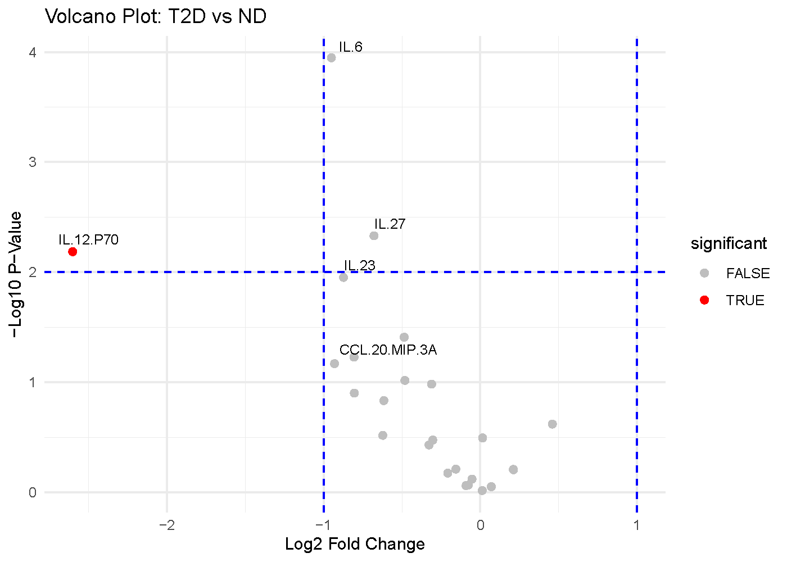

Understanding Volcano Plot
Source:vignettes/Understanding-Volcano-Plot.Rmd
Understanding-Volcano-Plot.RmdWhen to use a volcano plot
A volcano plot is most useful when you are comparing two groups and want to see both magnitude of change and statistical evidence at the same time. In CytokineProfile Shiny, it is a fast way to identify cytokines that look both biologically large and statistically notable in the same figure.
When not to use a volcano plot
A volcano plot is usually not the best fit when:
- you want to compare more than two groups in one workflow
- your emphasis is threshold-based effect-size screening rather than p-values
- you need raw distribution context for a small set of cytokines rather than broad screening
What the app is showing
The example below compares subjects with Type 2 Diabetes (T2D) against Non-Diabetic (ND) subjects.

The axes
- X-axis: Average log2 fold change (
log2FC) Positive values indicate higher abundance in the first condition of the comparison, while negative values indicate lower abundance. - Y-axis:
-log10(p-value)Larger values indicate smaller p-values. Points higher on the plot therefore have stronger statistical evidence against no difference.
The visual cues
- Each point is one cytokine.
- The vertical dashed lines mark the fold-change threshold. In this
example,
log2FC = -1andlog2FC = 1correspond to a 2-fold decrease or increase. - The horizontal dashed line marks the p-value threshold. In this
example,
-log10(p-value) = 2, which corresponds top = 0.01.
Which app arguments matter most
The main settings to pay attention to are:
-
Comparison Column: decides which categorical variable defines the two groups being compared. -
Condition 1andCondition 2: decide which two levels of that column are contrasted. -
Log2 Fold Change Threshold: determines how large a change must be before you visually treat it as biologically substantial. -
P-Value Threshold: controls the statistical evidence cutoff. -
Top Labels: affects readability only. It changes how many of the strongest points get labeled, not the underlying calculations.
A good workflow is to set the comparison first, keep the default thresholds, and then tighten or relax the thresholds only if you have a clear reporting reason.
How to interpret the figure
The most interpretable points are usually the ones in the upper corners:
- Upper right: large positive fold change and strong statistical evidence.
- Upper left: large negative fold change and strong statistical evidence.
- Center but high: statistically detectable changes that may be too small to matter biologically.
- Far left or far right but low: large fold changes that may be unstable, noisy, or underpowered.
For this example figure:
- Cytokines in the upper-left region are the strongest candidates for lower abundance in T2D relative to ND.
- Cytokines in the upper-right region would be candidates for higher abundance in T2D relative to ND.
- Points above the horizontal line but between the vertical lines should be read as statistically supported but modest in magnitude.
- Points outside the vertical lines but below the horizontal line may still be interesting for follow-up, but they should not be treated as strong differential findings on statistical grounds alone.
The key idea is that a volcano plot rewards agreement between effect size and p-value. A point that looks strong on only one of those dimensions deserves more caution.
Common cautions
Keep these limits in mind when reading volcano plots:
- The p-values come from repeated two-group testing, so multiple-comparison context still matters even when the figure is visually intuitive.
- Fold change can look large when sample sizes are small or group variability is high.
- A volcano plot is best for two-group comparisons. If you want to compare three or more groups together, other methods are often more informative.
- This figure helps prioritize candidates; it does not replace checking the raw distributions.
How to reproduce the result in the app
- Load a dataset and filter it to the two groups you want to compare.
- Choose
Volcano Plot. - Select
Comparison Column,Condition 1, andCondition 2. - Adjust
Log2 Fold Change Threshold,P-Value Threshold, andTop Labelsonly if needed. - Review the highlighted points together with the labels and any follow-up plots.

What to read next
Related articles:
- Understanding Dual-Flashlight Plot for threshold-based effect-size screening without p-value emphasis.
- Understanding Error-Bar Plots for compact group summaries.
- Understanding Boxplots and Violin Plots for distribution-level follow-up on prioritized hits.
Last updated: April 23, 2026